Released on October 21, 2009
(Next Release on October 28, 2009)
International Oil Data Gaps
In a supplement to the October 2009 Short-Term Energy Outlook, the Energy Information Administration (EIA) analyzed the inherent volatility of energy prices by looking at the options market. This supplement was the first product under the EIA's Energy and Financial Markets Initiative launched in September. The Initiative is aimed at examining all the variables that affect energy prices and price volatility. This issue is receiving global attention. The Energy Security and Climate Change section of the Leaders' Statement from the recent G20 Summit in Pittsburgh starts by stating that "Inefficient markets and excessive volatility negatively affect both producers and consumers." First in a list of specific steps undertaken individually and collectively by the leaders is a commitment to "increase energy market transparency and market stability by publishing complete, accurate, and timely data on oil production, consumption, refining and stock levels, as appropriate, on a regular basis, ideally monthly, beginning by January 2010."
The lack of consistent, comprehensive, timely, and transparent data about oil consumption, supplies, and inventories, undoubtedly hampers decision-making by market participants and allows informal and indirect measures of oil market activity to play a larger role in the markets. Most Organization for Economic Cooperation and Development (OECD) countries have centrally-organized statistical offices that are responsible for collecting oil consumption data, augmented by additional collecting by industry groups. For these countries, crude oil and oil product supplied data serve as a proxy for consumption data and are generally available monthly—though with a month or two lag—with the United States and Japan (through an industry group in the case of Japan) providing weekly estimates as well. For countries outside the OECD, which now represent nearly half of the world’s total consumption, oil consumption data are often not available for many months or years.
Government agencies and industry groups also collect oil production data. In addition, national oil companies often gather and report oil production data from their respective countries. Unlike the vast number of oil consumers, a relatively few number of countries constitute the bulk of global oil production. Within these countries, a handful of large oil fields, processing terminals, and transportation systems represent the majority of production. As a result, oil production data are generally timelier than oil consumption data. However, for many important oil-supplying countries, there is disagreement regarding reported production levels due to the perceived lack of impartiality in official government data. Because there may not be a consensus on production levels from various countries, differences between estimates can be quite large.
The most opaque portion of the global oil market balance may be inventories. Because inventories are the balancing item between production and consumption, these data provide valuable insight as to the current direction and expectations in the market. OECD countries generally report inventory data with a month or two lag, but inventory data is either severely lagged or non-existent for many non-OECD countries. In addition, there is no formal accounting of oil in transit or in floating storage, volumes which informal sources indicate have increased greatly this year.
There are no international standards regarding data collection in energy markets, but EIA engages in bilateral and multilateral working groups on energy statistics to help improve and standardize energy data collection. For example, we participate in the Joint Oil Data Initiative, or JODI, which is a multilateral program that encourages the reporting of timely and accurate oil data by all oil producing and consuming countries through a monthly survey and regular meetings. Additionally, as part of the Energy and Financial Markets Initiative, EIA will be conducting a comprehensive assessment of energy data gaps in both physical and financial markets. Improvements in domestic and international data collection, both in timeliness and completeness, should lead to increased transparency and a more efficient global oil market.
Gasoline and Diesel Prices Rise Sharply
The U.S. average price for regular gasoline jumped nearly nine cents to $2.57 per gallon. Even with the increase, that price remained 34 cents below a year ago and $1.54 less than the all-time high price set on July 7, 2008. With the exception of the West Coast, regional prices increased throughout the country. On the East Coast, the average price shot up 11 cents to hit $2.53 per gallon. The average in the Midwest increased a dime to $2.54 per gallon. Although the average price on the Gulf Coast shot up 12 cents, the price there remained the lowest of any region at $2.44 per gallon. The Rocky Mountain region experienced the smallest increase, moving up nearly four cents to settle at $2.52 per gallon. On the West Coast, the price dipped more than two cents to $2.87 per gallon. The average in California also fell, dropping three cents to $2.99 per gallon.
The national average price of diesel fuel jumped nearly 11 cents to $2.71 per gallon but remained $0.78 below last year and $2.06 below the all-time high price set on July 14, 2008. Regionally, prices increased throughout the country. The average on the East Coast shot up 11 cents to $2.72 per gallon, $0.84 less than a year ago. In the Midwest and on the Gulf Coast the average prices also went up 11 cents, to $2.69 and $2.64 per gallon, respectively. Despite the increase, the Gulf Coast average continued to be the lowest in the country. The smallest increase of any region occurred in the Rocky Mountains, where the price went up over a nickel to $2.70 per gallon. On the West Coast, the average increased nine cents to $2.82 per gallon and the price in California jumped eight cents to $2.87 per gallon.
Propane Inventories Post Early Draw
Propane stocks recorded the first draw of the heating season, falling over 1.3 million barrels this past week, to bring total U.S. inventories down to 71.6 million barrels. Despite the decrease, inventories are positioned at the upper boundary of the average range for this time of year. The Midwest and Gulf Coast regions experienced the largest declines of inventories at 0.5 million barrels each. The East Coast region withdrew 0.2 million barrels of inventory and the Rocky Mountain/West Coast regional stocks fell 0.1 million barrels. Propylene non-fuel use inventories increased their share of total propane/propylene inventories from last week, from 2.9 percent to 3.0 percent.
Residential Heating Oil Prices Driven Higher
Residential heating oil prices rose during the period ending October 19, 2009. The average residential heating oil price increased 10.2 cents per gallon last week to reach 263.5 cents per gallon, a decrease of 59.2 cents per gallon from the same time last year. Wholesale heating oil prices gained 16.2 cents per gallon to reach 210.1 cents per gallon; 15.6 cents per gallon lower than last year at this time.
The average residential propane price increased, rising 3.7 cents to reach 211.3 cents per gallon. This was a decrease of 44.4 cents per gallon compared to the 255.7 cents per gallon average from the same period last year. Wholesale propane prices increased, rising by 8.5 cents per gallon, from 100.0 cents per gallon to 108.5 cents per gallon. This was a decrease of 10.4 cents per gallon when compared to the October 20, 2008 price of 98.1 cents per gallon.
Text from the previous editions of “This Week In Petroleum” is now accessible through a link at the top right-hand corner of this page.
| Retail Prices (Cents Per Gallon) | |||||||
| 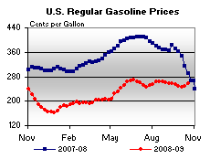 | 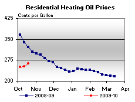 | ||||||
| 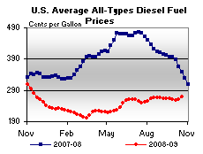 | 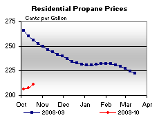 | ||||||
| Retail Data | Changes From | Retail Data | Changes From | ||||
| 10/19/09 | Week | Year | 10/19/09 | Week | Year | ||
| Gasoline | 257.4 | Heating Oil | 263.5 | ||||
| Diesel Fuel | 270.5 | Propane | 211.3 | ||||
| Spot Prices (Cents Per Gallon*) | |||||||||||||||||||||||||||||||||||
| 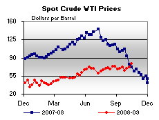 | 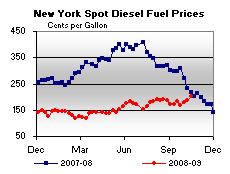 | ||||||||||||||||||||||||||||||||||
| 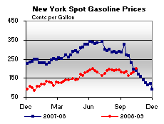 | 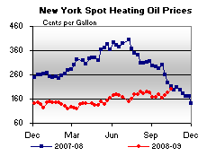 | ||||||||||||||||||||||||||||||||||
|
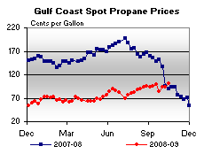 | ||||||||||||||||||||||||||||||||||
| *Note: Crude Oil WTI Price in Dollars per Barrel. | |||||||||||||||||||||||||||||||||||
| Stocks (Million Barrels) | |||||||
| 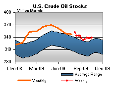 | 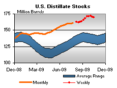 | ||||||
| 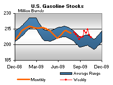 | 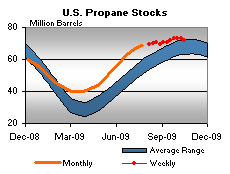 | ||||||
| Stocks Data | Changes From | Stocks Data | Changes From | ||||
| 10/16/09 | Week | Year | 10/16/09 | Week | Year | ||
| Crude Oil | 339.1 | Distillate | 169.9 | ||||
| Gasoline | 206.9 | Propane | 71.634 | ||||